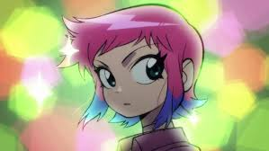

About Ramona
Ramoma Flowers is a New Yorker living in Toronto. She works as a delivery person for Amazon.ca. She has 7 evil exes who Scott must fight to win her over.
Ramona's Characteristics
- She's guarded
- She's a tea enthusiast
- She can travel through subspace
- She fights with an giant mallet